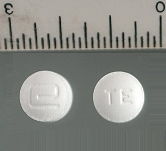
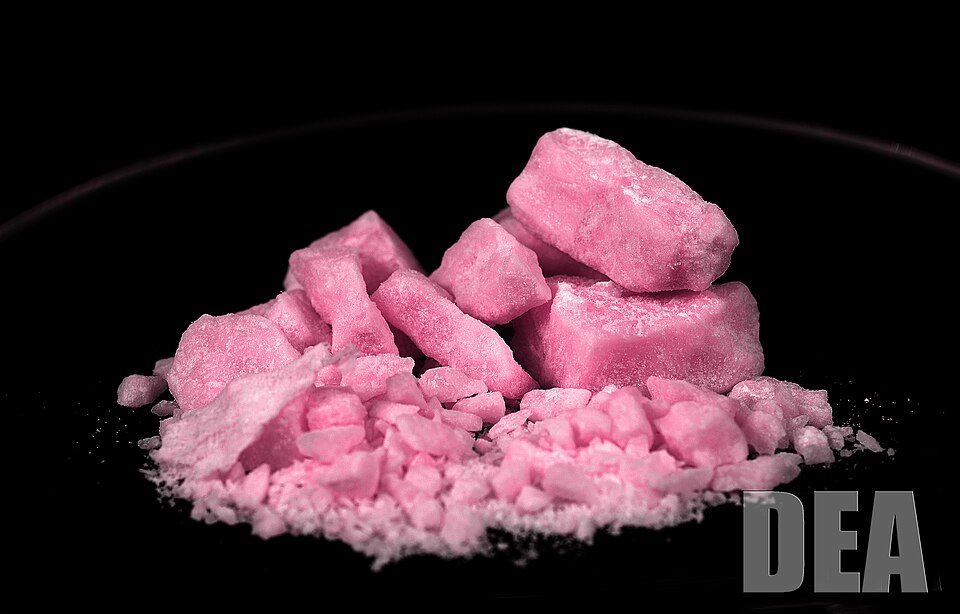
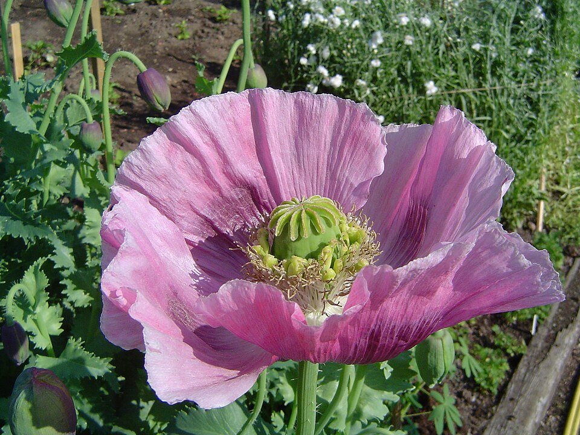
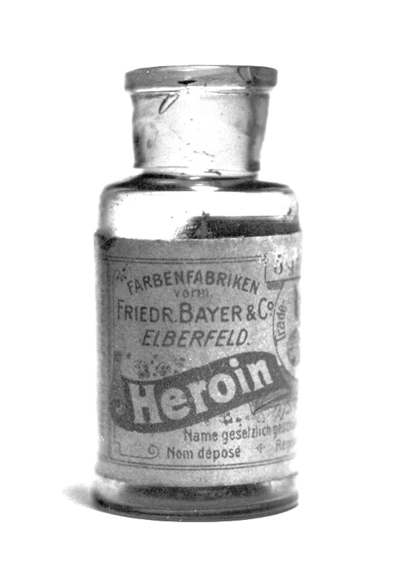

Tàn phá não bộ & thần kinh
Ma túy làm rối loạn dẫn truyền thần kinh, gây suy giảm trí nhớ, mất tập trung, ảo giác — hậu quả có thể không hồi phục dù đã cai.
Tổn thương vĩnh viễn
Một lần tò mò có thể đánh đổi cả cuộc đời. Hãy trang bị kiến thức, kỹ năng và sự tỉnh táo để bảo vệ chính mình, gia đình và bạn bè trước hiểm họa ma túy.
Nội dung tham khảo UNODC, Bộ Công an & Bộ Y tế Việt Nam
Nói Không Với Ma Túy
= Tương lai tươi sáng
316 triệu
người sử dụng ma túy trên thế giới (2023, UNODC)
600.000+
ca tử vong liên quan ma túy mỗi năm (UNODC)
226.000+
người nghiện có hồ sơ quản lý tại Việt Nam (Bộ Công an)
10.521+
hồ sơ cai nghiện lập trong 10 tháng đầu 2024 — tăng 49,2%
Ma túy phá hủy não bộ, sức khỏe, tâm lý, gia đình và cả tương lai — không có loại ma túy nào là "an toàn" hay "không gây nghiện".
Ma túy làm rối loạn dẫn truyền thần kinh, gây suy giảm trí nhớ, mất tập trung, ảo giác — hậu quả có thể không hồi phục dù đã cai.
Tổn thương vĩnh viễn
Suy tim, suy gan, suy thận, phá hủy hệ miễn dịch… Sốc thuốc (overdose) có thể khiến người dùng tử vong ngay lần đầu sử dụng.
Sốc thuốc gây tử vong
Hoang tưởng, lo âu, trầm cảm nặng, kích động mất kiểm soát — nhiều người nghiện rơi vào trạng thái tự hại hoặc làm hại người khác.
Nguy cơ tự hại cao
Dùng chung bơm kim tiêm là con đường lây nhiễm HIV, viêm gan B, C… — những căn bệnh đeo bám suốt đời người sử dụng.
Lây nhiễm suốt đời
Người nghiện bán dần tài sản, bạo lực với người thân, khiến gia đình khánh kiệt, con cái bị bỏ rơi và tổn thương tâm lý sâu sắc.
Hệ lụy nhiều thế hệ
Để có tiền mua ma túy, người nghiện sẵn sàng trộm cắp, cướp giật, buôn bán — vướng vòng lao lý và đánh mất tương lai.
Vi phạm nghiêm trọng pháp luật
Chỉ một lần thử cũng có thể khiến bạn lệ thuộc ma túy cả đời.
Tìm hiểu lịch sử ma túyẢnh thực tế từ các nguồn công khai (public domain) về ma túy bị thu giữ

Methamphetamine dạng viên
Ma túy tổng hợp được sản xuất dưới nhiều hình dạng khác nhau để qua mặt kiểm soát.
Nguồn: Cơ quan Phòng chống Ma túy Hoa Kỳ (DEA) — Public domain, qua Wikimedia Commons.

Ma túy “núp bóng” kẹo dâu
“Strawberry meth” — ma túy đá nhuộm hồng, ngụy trang như kẹo để nhắm vào giới trẻ.
Nguồn: Cơ quan Phòng chống Ma túy Hoa Kỳ (DEA) — Public domain, qua Wikimedia Commons.
Từ một loài cây được dùng làm thuốc giảm đau, con người đã chiết xuất ra những chất gây nghiện nguy hiểm bậc nhất lịch sử. Hãy nhìn lại hành trình đó.
Khoảng 3400 TCN
Người Sumer ở Lưỡng Hà (Iraq ngày nay) trồng cây thuốc phiện và gọi nó là "cây vui sướng" — ban đầu chỉ dùng để giảm đau.
Thế kỷ 17
Hút thuốc phiện lan rộng khắp Trung Quốc, tàn phá sức khỏe và xã hội — dẫn đến lệnh cấm và những biến động lịch sử lớn.
1804
Dược sĩ người Đức Friedrich Sertürner chiết xuất thành công morphine từ thuốc phiện — chất giảm đau mạnh nhưng gây nghiện khủng khiếp.
1839 – 1860
Mâu thuẫn xoay quanh việc buôn bán thuốc phiện đã châm ngòi hai cuộc chiến tranh lớn — minh chứng ma túy có thể làm rối loạn cả thời cuộc.
1874
Heroin được tổng hợp từ morphine, sau đó được hãng Bayer thương mại hóa như một "loại thuốc ho" — rồi trở thành loại ma túy gây chết người hàng đầu thế giới.
1919
Nhà hóa học Nhật Bản tổng hợp methamphetamine — "ma túy đá" ngày nay, một trong những chất kích thích tàn phá nhất mà con người từng tạo ra.
1961 – 1988
Ba Công ước (1961, 1971, 1988) được ký kết, đặt nền tảng pháp lý toàn cầu cho việc kiểm soát và đấu tranh chống ma túy cho đến ngày nay.
Thế kỷ 21
Ma túy tổng hợp (ma túy đá, thuốc lắc, cần sa tổng hợp) bùng nổ; ma túy ngụy trang thành bánh kẹo, nước uống, thuốc lá điện tử… nhắm thẳng vào giới trẻ.
Bài học lịch sử
Hàng nghìn năm qua, ma túy chưa bao giờ là "mốt thời thượng" hay "thuốc thần" — nó luôn là con đường dẫn đến bệnh tật, tội phạm và cái chết.

Cây thuốc phiện — nơi mọi chuyện bắt đầu
Từ loài hoa này, con người đã chiết xuất ra morphine (1804) và heroin (1874).
Nguồn: Louise Joly (AtelierJoly) — CC BY-SA 1.0, qua Wikimedia Commons.

Chai “Heroin” của hãng Bayer
Đầu thế kỷ 20, heroin từng được bán như một loại “thuốc ho” — trước khi tác hại khủng khiếp của nó được nhận ra.
Nguồn: Wikimedia Commons — Public domain.
Kiến thức là lá chắn tốt nhất. Hãy ghi nhớ những điều sau để bảo vệ bản thân và bạn bè.
Ma túy có thể trà trộn trong bánh kẹo, nước uống, thạch, thuốc lá điện tử không rõ nguồn gốc. Tuyệt đối không nhận và không dùng đồ ăn, thức uống lạ từ người không quen biết.
Khi bị rủ rê, hãy từ chối dứt khoát: "Mình không dùng!" rồi rời đi ngay. Không cần giải thích nhiều — một lời từ chối rõ ràng luôn đáng tự hào hơn sự tò mò.
Không tụ tập ở các tụ điểm phức tạp (quán bar, vũ trường trá hình...). Bạn bè tốt là người giúp bạn tiến bộ — không phải người rủ bạn "thử cho biết".
Thể thao, câu lạc bộ, nghệ thuật, tình nguyện… Cuộc sống bận rộn với những điều ý nghĩa chính là "vắc-xin" hiệu quả nhất chống lại cám dỗ.
Thấy bạn có biểu hiện lạ (mất ngủ, gầy sút, hay vắng học, dùng đồ lạ), đừng che giấu — hãy báo ngay cho thầy cô, gia đình hoặc người lớn tin cậy.
113 (Công an), 111 (Tổng đài quốc gia bảo vệ trẻ em), 0769.04.04.04 (tố giác ma túy toàn quốc). Lưu ngay vào máy — biết đâu sẽ cứu được ai đó.
Quy Tắc 4 KHÔNG Của Học Sinh, Sinh Viên
KHÔNG thử
dù chỉ một lần
KHÔNG tò mò
với mọi lời rủ rê
KHÔNG rủ rê
bạn bè sử dụng
KHÔNG che giấu
khi phát hiện người dùng
Phát hiện người sử dụng, buôn bán ma túy hoặc cần tư vấn? Đừng ngần ngại — hãy liên hệ ngay các kênh dưới đây.
Đường dây nóng tố giác ma túy toàn quốc
0769.04.04.04
Cục Cảnh sát điều tra tội phạm về ma túy (Bộ Công an) — hoạt động 24/7
Công an — khẩn cấp
113
Gọi ngay khi gặp tình huống khẩn cấp liên quan đến an ninh, tội phạm ma túy
Tổng đài quốc gia bảo vệ trẻ em
111
Miễn phí — tư vấn, hỗ trợ trẻ em và học sinh gặp nguy cơ, bị xâm hại hoặc cần giúp đỡ
Liên hệ trực tiếp ban tổ chức
0966 023 807
Gọi hoặc nhắn tin Facebook để được tư vấn, trao đổi về chiến dịch